How to use the Windows program and the phone app: import your statements, understand every screen and every figure, and keep your data safe.
Version 0.6.1 of the programNovember 2026dasuarezang.github.io/kreix-web
Contents
Table of contents
1What Kreix is and how to use it3
2Installing and first launch4
3Importing your statements6
4A tour of the program9
5Your transactions, budgets and goals14
6Understanding the figures16
7Security and backups17
8Moving your data from one place to another19
9Kreix on your phone20
10Shortcuts and little tricks24
11Common problems25
12Glossary26
How to read this guide. If this is your first time, read chapters 1 to 3 and come back to the rest whenever you like. All the screenshots use made-up demo data: no figure is real.
1
What Kreix is and how to use it
Kreix is a personal finance program. It reads the statements you download from your bank and shows you, in one place, how much you have, how much you spend, how much you save and how your investments are doing. It comes in two forms that share the same logic and the same data format:
Windows program
The main program, for Windows 10 and 11. This is where you import statements, organize everything and make backups.
Phone app
The same app adapted to the phone (Android and iPhone). It installs from the browser, with no app store, and works without a connection. Your data is passed to it from the computer with a QR code.
Four ideas worth having clear
Kreix does not connect to your bank. It never asks for passwords or access. It works with CSV or Excel files that you download yourself from your bank's website or app.
Everything stays on your device. There are no accounts, servers or telemetry. Your data is stored encrypted with a master password that only you know.
You can re-import without worrying. If you import the same statement twice, or two that overlap, only what is new is added.
Almost everything can be undone. After every important change a notice appears with an Undo button.
What you need to get started
A device running Windows 10 or 11 (64-bit), for the program. The phone is optional.
Your bank statements in CSV or Excel (PDFs are not imported). The banks recognized out of the box are listed in chapter 3; for any other, Kreix helps you say which column is which.
A few minutes to choose a master password you will not forget: if you lose it, nobody can recover your data.
Kreix
2
Installing and first launch
Installing the program
Download the installer (Kreix-Setup-0.6.1.exe) from the website and open it.
The installer does not ask for administrator permissions: it installs Kreix in your user folder and creates a shortcut in the Start menu and, if you want, on the desktop. You can choose the installer's language (Spanish, Catalan or English).
Because the installer is not signed yet, Windows may warn you the first time. Click More info and then Run anyway.
Uninstalling does not delete your data: it stays in %APPDATA%\Kreix until you remove it.
The master password
The first time you open Kreix it asks you to create a master password (minimum 8 characters). Below it, a meter with four segments, which fill up and go from red to yellow to green, and a sentence tell you how hard it would be to guess and how to improve it. It is a warning, not a rule: the only minimum is 8 characters.
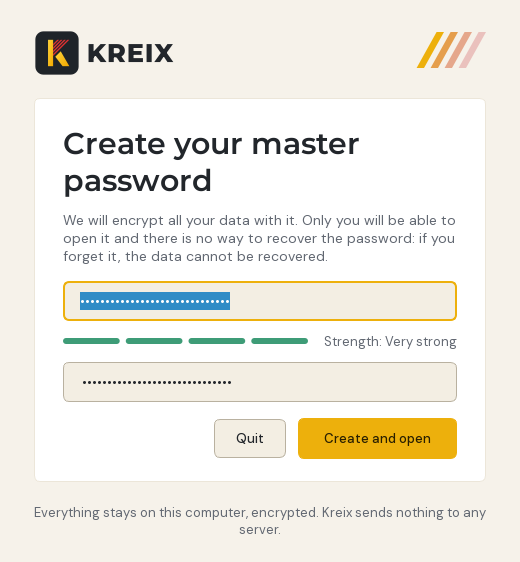
Creating the master password, with the strength meter.
Write it down somewhere safe. Kreix encrypts your data with it and there is no spare key. If you forget it, the only way out is to start from scratch.
The welcome
Next, a dialog asks you three quick questions. Everything can be changed later in Settings:
Language. Spanish, Catalan or English. The system's language is suggested.
Your name. So that Home greets you according to the time of day. It is optional.
What you want to manage. Your bank accounts, your investments or both (at least one always stays on). Home adapts to what you choose.
The first screen
While Kreix is still empty, Home explains in three steps what to download and where to drop it, and offers Try with sample data: made-up data, with a notice at the top and a Start with my data button. It removes itself as soon as you import real statements, so it never gets mixed up with yours.
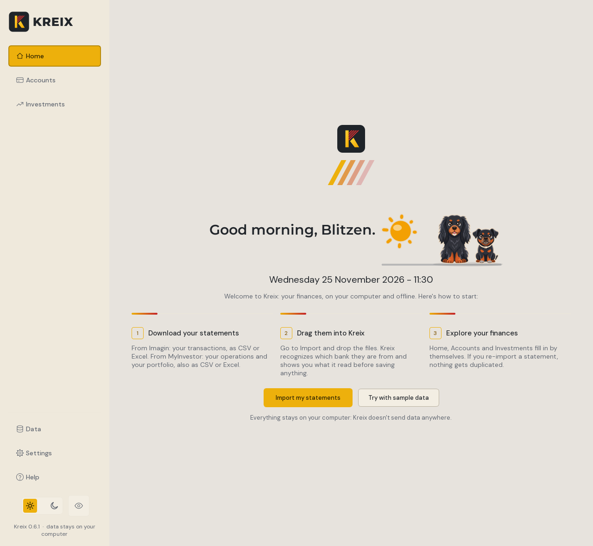
Home with an empty Kreix: three steps to get started.
3
Importing your statements
Everything starts at Data > Import. Download your bank statement as CSV or Excel, drag it into the window (or click Select files) and choose the account it belongs to.
Drop the file. Kreix detects the bank and the file type from the headers, not from the name or the extension. Files with no extension or with .csv.txt work too.
Check what it has read. A card appears for each file with its type, the number of rows, the dates, how many transactions are new and how many were already there. Nothing has been saved yet.
Click Import. Only the new transactions are saved, and a notice lets you Undo if something is not what you expected.
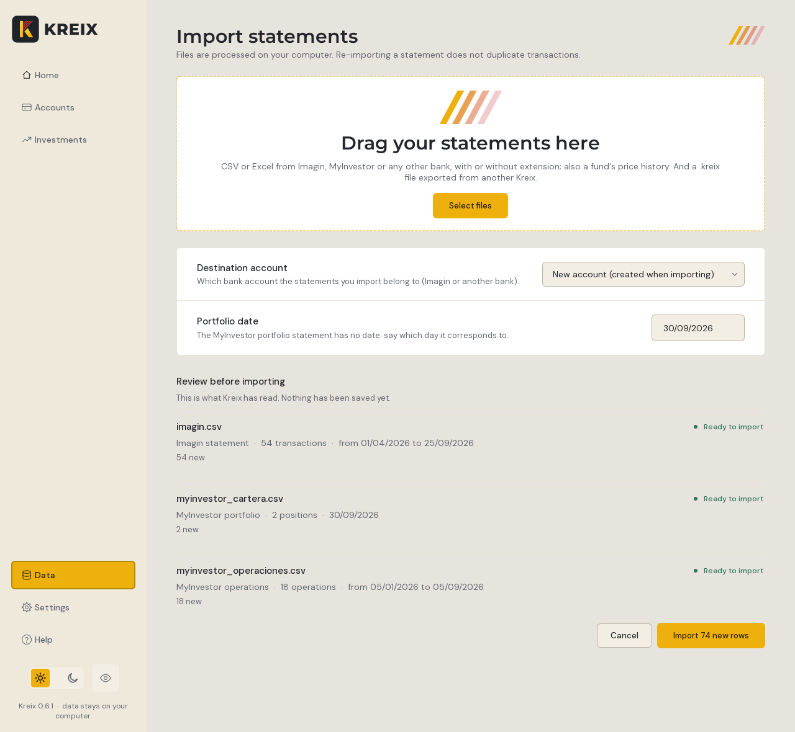
Import preview: what Kreix has read, before saving anything.
Which files it recognizes
Source
File
Notes
Imagin
Transactions statement
CSV or Excel
MyInvestor
Operations and portfolio
The portfolio statement has no date: Kreix asks you which day it corresponds to.
CaixaBank
Transactions statement
Income and expenses in separate columns. Being tested.
Santander
Transactions statement
Being tested.
Revolut
Account statement (CSV)
In English or Spanish. Subtracts the fee and only reads transactions in euros. Being tested.
Trade Republic
Transactions (CSV)
Reads the cash account; leaves out stock purchases and sales. Being tested.
Any other bank
Transactions statement
A wizard asks you which column is which.
Price history
CSV or Excel of a fund
One date column and one price column, and optionally the ISIN.
It accepts CSV with semicolons, commas or tabs, in UTF-8 or Windows-1252, and Excel (.xlsx and the old .xls, even the kind some banks save as a web table). Amounts in Spanish format (-2,99EUR, 1.234,56 €) are cleaned up automatically. A .kreix file is restored directly (chapter 8).
If your bank is not on the list
When you drop a file that Kreix does not recognize, the Assign the columns button appears. A wizard shows you the first rows, suggests the columns from their titles, and you correct them:
The title row (it skips the introduction lines that some Excel files have).
The amount: one column with a sign, or two for income and expenses; and whether expenses come as positive numbers.
The decimals (1.234,56 or 1,234.56) and the date order (day/month/year or month/day/year).
The balance, which is optional; if you provide it, Kreix checks that it chains correctly.
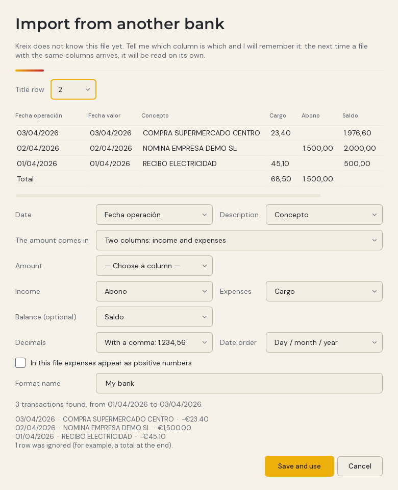
The wizard for importing from another bank.
Before saving you see how many transactions are read and the first ones, so you can check dates, amounts and signs. The format is saved under the name you give it and is applied automatically to later files; in Import > Banks I already know you can forget it.
Duplicates and several accounts
Kreix never duplicates transactions. You can re-import the same statement, or several that overlap. Two identical payments on the same day are told apart by the balance that follows.
In Import you choose the destination account of each statement. The same statement imported into two different accounts does not count as a duplicate. The investment portfolio is a single one.
If a file cannot be read, Kreix explains why and what to do (for example, download it again as CSV or Excel without editing it).
A fund's price history
If you have downloaded a fund's price history (from your bank, Morningstar, Yahoo or Investing), drop it into Import too. Kreix takes the ISIN from a column, from the file name or from the Fund of the history selector. With it, each fund's chart goes from one point per month to real daily points. Today's value does not change: your latest portfolio statement still rules.
4
A tour of the program
At the top left are the three views of your data: Home, Accounts and Investments. Below, with their icons, are the tools: Data (with Import and Export), Settings and Help, and under them the light/dark mode switch and the eye for privacy mode.
Home
Your situation at a glance. It greets you according to the time of day with your name, the day and the time, and the date of the last data update (the last day you imported something).
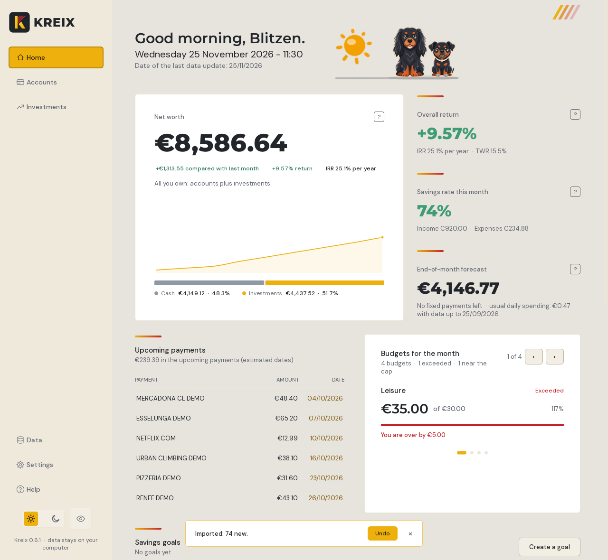
Home: net worth, return, savings rate, forecast, upcoming payments and budgets.
Net worth: everything you own, accounts plus investments, with how much is cash and how much is invested. A green or red line says how much it has gone up or down compared with the close of the previous month.
Overall return and savings rate for the month.
End-of-month forecast: how much money you will have on the last day of the month, given your remaining fixed payments, your fixed income still to come (your salary) and your daily spending. It is an estimate and Help explains how it is made.
Upcoming payments: your recurring payments due in the next few weeks, by date.
Budgets of the month: they move on by themselves one by one; you can move through them with the arrows, the dots or the ← → keys.
Savings goals and To classify: transactions with no category, with a suggested rule if a merchant repeats.
Once data is loaded, a list of first steps (import the account, the operations, the portfolio, set a budget) that you can hide.
A lively Home. Next to the greeting there is an animated sky that follows the real time (sun by day, moon and stars at night), with Blitzen and Black, the author's dogs. It can be turned off in Settings > Animated sky and light by time of day.
Accounts
Everything about your bank accounts: balance, income, expenses, savings rate, average spending, biggest expense and main category; expenses by category, balance over time, income and expenses by month, budgets, recurring payments and the transactions table.
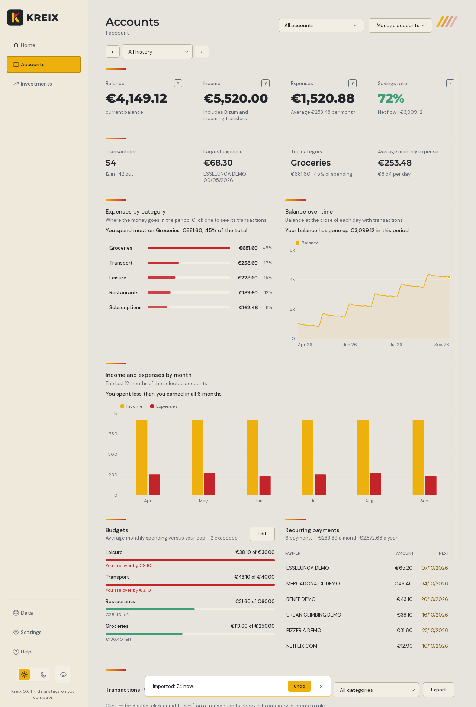
Accounts: metrics, charts, budgets, recurring payments and transactions.
By month or overall. The selector at the top switches between All history and each month with data (the arrows jump to the previous or next month). In a month, the balance is the closing balance and the average spending changes from monthly to daily.
Several accounts. The selector has a checkbox for each account: tick the ones you want to combine and everything is recalculated with them. Manage accounts lets you add, rename and delete.
Investments
Everything about your portfolio: value, contributed, capital gain, return (TWR and IRR), distribution by fund, contributed versus value, evolution of each fund, current positions and operations.
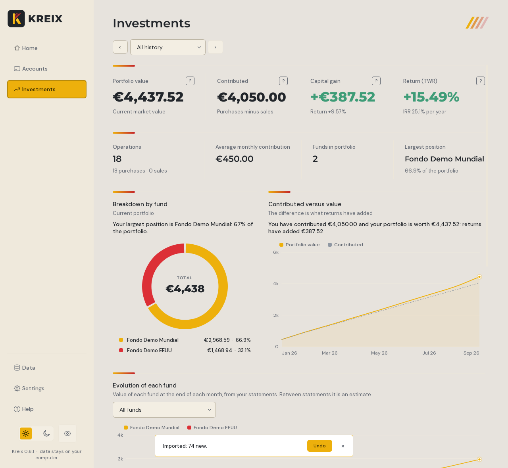
Investments: value, return, breakdown by fund and operations.
The Evolution of each fund card draws one line per fund with its value at the close of each month (or, if you pick one, its value against what you contributed). It is an estimate: Kreix reconstructs the units you held from your operations and multiplies them by a price interpolated between the net asset values it knows. The more portfolio statements you import, the more faithful the curve is. With a month chosen you see the estimated value at the close, what was contributed during the month, the change excluding contributions and the month's return.
Data: Import and Export
Import is explained in chapter 3. Export saves all your data in a single .kreix file to make a copy or move it to another device, and from there it is passed to the phone (chapter 8).
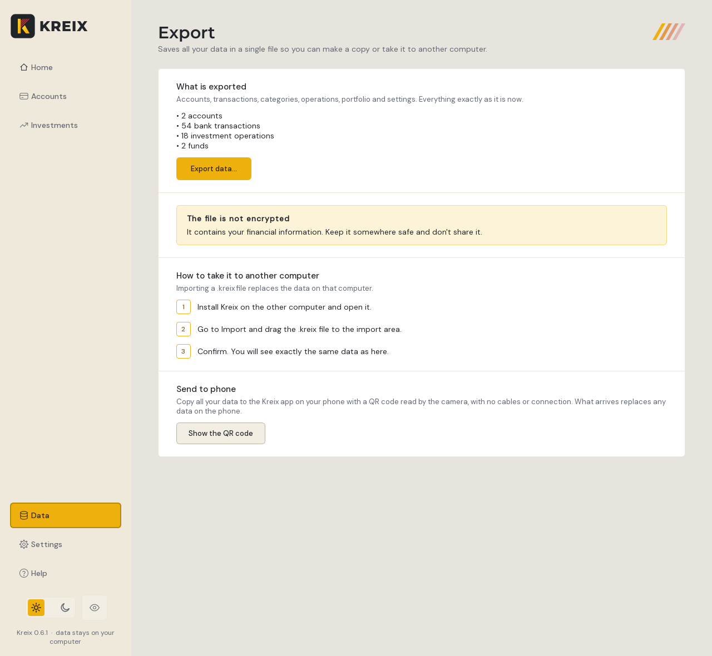
Export: the .kreix file and «Send to phone».
Settings
Organized in cards by topic. Each switch applies instantly:
Your name, Language and What you're interested in. The language changes the whole application (menus, help, notices, dates and numbers) without losing your place. In English numbers are written 1,234.56; in Spanish and Catalan, 1.234,56. If you turn off accounts or investments, their tabs are still there and you can turn them back on from the tab itself.
Text size (normal, large or extra large) for the whole application.
Animated sky and light by time of day.
Count Bizum as income and expenses and Count incoming transfers as income: they affect the savings rate calculation (chapter 6).
Category rules. Your rules take precedence over the ones Kreix comes with (chapter 5).
Security (change the password, automatic lock, lock now) and Backups (folder, how many to keep, restore): chapter 7.
Your data: where it is stored and Delete all data (leaves the database empty and keeps the settings). About: the version and what's new.
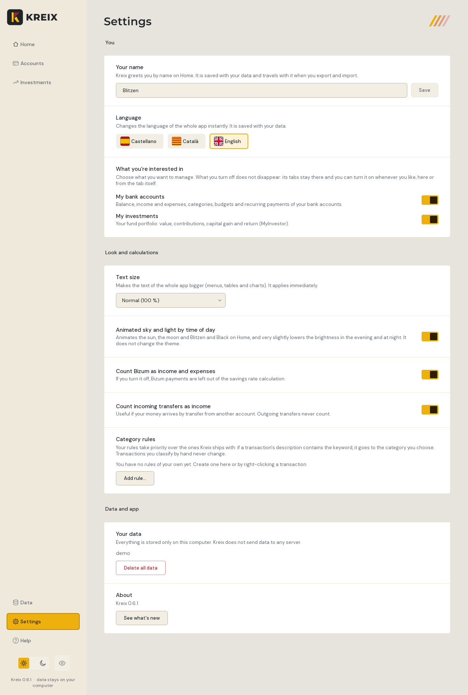
Settings: your name, language, what you're interested in, appearance, rules and your data.
Help
A glossary for people who don't know finance, in six topics: Your money at a glance, Your bank accounts, Your investments, Return, Warnings and Using Kreix. Each term unfolds when you click it, with how Kreix calculates it, an example, a warning (Watch out) and a tip (What to do). Next to the main figures there is a «?» that opens its explanation already unfolded. The Ctrl+K search also finds pages, actions, transactions and help terms.
5
Your transactions, budgets and goals
The transactions table
In Accounts, transactions go from the most recent to the oldest and, within the same day, in their real order (it is reconstructed from the chain of balances). You can search by description, filter by category and sort by clicking any header. With several accounts an Account column appears. Clicking a category in the expenses chart, or a budget, filters the table to those transactions.
Each transaction has a ••• button (also double-click or right-click) to change its category, create a rule or copy the description. The table's Export button saves the rows you can see, with the current filter and order, as CSV (UTF-8, semicolon-separated, decimal comma) or Excel. It does not export to PDF.
Categories your way
Kreix categorizes your expenses with keyword rules (salary, groceries, subscriptions, leisure, restaurants, transport, housing, health, Bizum…), with a broad dictionary of common merchants and bills. You're in charge:
Change category of a transaction: no rule overrides your choice. Back to the automatic category hands it back to Kreix.
Create rule for «…» sends every description containing that word to a category, including the ones you import later. They are managed in Settings > Category rules.
To classify. Home counts the transactions without a category and, if a merchant repeats, suggests a rule to classify them in one click.
Budgets
In Accounts, the Budgets panel (Set budgets button) sets a monthly cap per category. The bar is green while you are under, yellow once you pass 85 % and red when you exceed it. With a month chosen it compares that month's spending; with all history, the average monthly spending. Home warns you about the ones you are about to exceed or already have.
Recurring payments
Kreix detects your subscriptions and monthly bills, tells you how much they add up to per month and per year and when the next one is due. A charge counts as recurring if it repeats at least three months in a row, about every 30 days and with a stable amount (up to a 20 % difference). If it stops appearing for a month and a half it is considered cancelled. Groceries do not qualify (the amount varies and it repeats more than once a month), and transfers, Bizum and income never count.
You decide. With ••• (or right-click) on an expense, Mark «…» as a recurring payment adds it even if Kreix does not detect it (a single charge is enough; an annual one counts a twelfth per month). «…» is not a recurring payment removes it if Kreix got it wrong. The ones you marked say «marked by you» and can be unmarked.
Savings goals
In Home, the Savings goals panel shows one bar per goal. Manage goals lets you create, edit and delete goals (for example, «€1,000 for a holiday») and add savings. Kreix does not move money: it only keeps count. If you give a goal a date, it tells you how much you would need to set aside each month to get there on time.
Transfers between your accounts
An outgoing and an incoming amount of the same size in two of your accounts are paired and count neither as an expense nor as income. Incoming transfers do count as income and outgoing ones are neutral, unless you change that in Settings.
Warnings about what doesn't add up
Instead of importing silently, Kreix warns you about balances with gaps, a portfolio that does not match the operations or inconsistent amounts.
6
Understanding the figures
Figure
What it is and how it is calculated
Net worth
The balance of your accounts plus the market value of the latest portfolio snapshot of each fund. Home shows how much is cash and how much is invested, and what percentage each part is.
Overall return
(market value − invested capital) ÷ invested capital, according to the portfolio statement.
Savings rate
(income − expenses) ÷ income for the month. It can be negative.
IRR
Internal rate of return, annualized with irregular dates (XIRR, 365-day basis). It takes into account when you contributed each euro.
TWR
Time-weighted return: it chains the stretches between contributions, so the moment you contribute does not affect it.
What counts as income or expense
Transfers between your own accounts that come in count as income; outgoing ones are neutral. It is an option in Settings.
Bizum payments count as income or expense. This is also an option in Settings.
Contributions to MyInvestor are not an expense: they are calculated from MyInvestor purchases, so they are not counted twice.
How far to trust the IRR and the TWR
They are reconstructed from the operations history. If an operation is missing, the portfolio does not match them: Kreix warns you and hides the IRR and the TWR until it is fixed, instead of showing misleading figures. To avoid this, export the complete history from your bank, from the very beginning.
Estimates are called estimates. The end-of-month forecast and the value of the funds at each month's close are approximate calculations. Help explains how each one is made.
Privacy mode
The eye in the sidebar (or Ctrl+H) blurs every amount in euros, in charts and tables too: you can tell there is a number, never which one. The real figure never even reaches the screen, so it is safe for sharing your screen or working in public.
How to read each chart
Under each chart there is a sentence that says what it shows («Your balance has risen by €3,099.12 in this period»). Read it first: it sums up what the chart means.
7
Security and backups
Your data is never stored in the clear. With the master password, data is encrypted on your device and only decrypted in memory while Kreix is open. What is on disk is a single encrypted file, kreix.krx, in %APPDATA%\Kreix.
What Kreix does for you
Encryption: the key is derived from your password with PBKDF2-HMAC-SHA256 (600,000 iterations and a random salt) and the data is encrypted with Fernet (authenticated AES). A wrong password or a tampered file is rejected.
In memory: when you unlock, the database is decrypted straight into RAM, with no temporary files in the clear. Kreix saves the encrypted file a few seconds after each change and on closing, with atomic writes and a .bak copy that is also encrypted.
No network: there are no accounts, servers or telemetry.
Changing the password
Settings > Security changes it after checking the current one. The data is re-encrypted with a new key and salt, and the backups are re-encrypted with the new one too, so none of them can still be opened with the old one.
Automatic lock
Kreix hides everything and asks for the password again:
after a few minutes without touching the device (1, 2, 5, 10, 15 or 30; or never),
when you minimize the window,
when Windows is locked (Win+L) or the device goes to sleep (each one can be turned off).
Ctrl+L or Settings > Security > Lock now locks it instantly. From the third failed attempt in a row you have to wait 5, 10, 20 and, at most, 30 seconds before trying again.
Automatic backups
Kreix makes an encrypted copy (Kreix-copia-YYYY-MM-DD_HH-MM.kreix) when it opens if there is none yet, after saving changes (at most one per hour and never if there is nothing new) and when it closes.
They are stored in the folder you choose in Settings > Backups (by default, next to your data) and the latest 3, 5, 10 or 20 are kept.
At the bottom left you see when the last one was made. Check the latest backup really opens it and tells you how many transactions and accounts it has.
They are restored from the same screen by typing the master password.
Copy off the device. Backups are stored by default next to your data. To be safe from a disk failure, choose a folder on another drive or in a cloud you already use: the file is encrypted.
If you forget the password
There is no way to recover the data. On the lock screen, I forgot the password deletes the encrypted file (after asking for confirmation) so you can start from scratch with a new password and import your statements again. That is why backups and a password written down in a safe place are so important.
What is not encrypted
A .kreix file exported without ticking the encryption box, and the file you import while Kreix validates it. Treat them as sensitive data: they contain your financial information.
8
Moving your data from one place to another
The .kreix file
Data > Export creates a .kreix file (a ZIP with a consistent copy of the database and a card with the version and the totals). It is used to make a backup or to move your data to another computer.
The Encrypt the file with my master password box is on by default. When you import it, on this or another computer, Kreix asks for the password it was exported with.
If you don't encrypt it, the file is not encrypted. Keep it somewhere safe and do not share it.
Everything is exported: accounts, transactions, categories, operations, portfolio and settings (also your name and your language), including the duplicate protection.
Moving your data to another computer
On the source computer, Data > Export and save the .kreix file.
On the other computer, install Kreix, go to Import and drag the file in.
The data ends up identical to the source.
Importing a .kreix replaces any data on that device (it asks for confirmation if there was some). A received file is treated as untrusted: only its two entries are accepted, the integrity of the database is checked, and it is rejected if it contains triggers or views, if it comes from a newer version or if it is too large.
Sending your data to the phone with a QR code
This is how you take your data from the computer to the phone app without cables or a connection. First install the app on the phone (chapter 9). Then:
On the computer, open Data > Export > Send to phone. A QR code appears that keeps changing (about six codes per second).
On the phone, open the app, go to Data and tap Scan the QR code.
Point the camera at the computer screen, without moving it, until the progress bar reaches 100 %. It does not need to start anywhere in particular: the app pieces the parts together.
What is transferred. All the data, in the same format as the .kreix file. What you receive will replace the data on the phone. The first time, the phone will ask for permission to use the camera.
9
Kreix on your phone
The phone app is a web application (PWA) that runs the same logic as the Windows program, with the interface adapted to the phone. It installs from the browser, works without a connection and stores everything encrypted on the phone in the same format as the computer. It says exactly the same as the program: same figures, same charts, same explanations.
Installing it on Android
Open Kreix in Chrome from the phone itself (dasuarezang.github.io/kreix-web/app/). The first time it downloads about 20 MB; after that it works without a connection.
Open the menu: the three dots (⋮), at the top right.
Tap «Install app». If you don't see it, tap «Add to Home screen» and then «Install»: they do the same thing.
Confirm with «Install». No app store and no account.
Open it from the home screen. It opens full screen, like any other app.
In Samsung Internet the steps are: three-line menu (≡), at the bottom right → «Add page to» → «Home screen» → «Add». In Edge they are almost the same as in Chrome.
Installing it on iPhone and iPad
Open Kreix in Safari. If the link opens inside another app (WhatsApp, Instagram…), copy it and paste it into Safari.
Tap Share: the square with an arrow pointing up (at the bottom on iPhone, at the top right on iPad).
Scroll down and tap «Add to Home Screen». The list is long: swipe it up until you see the option with a square and a «+».
Leave «Kreix» as the name and tap «Add», at the top right.
Open it from the icon, not from Safari: that way it displays full screen.
First launch on the phone
It works just like on the computer: you create a master password (with the same meter), choose language, name and what you want to manage, and you can try it with sample data.
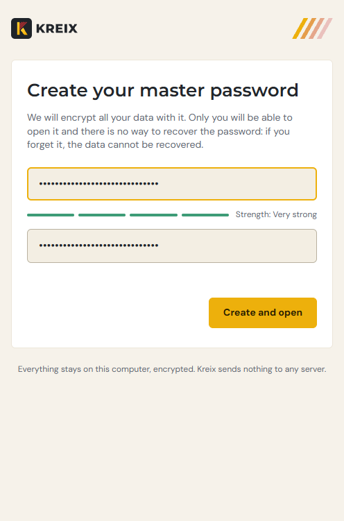
Master password
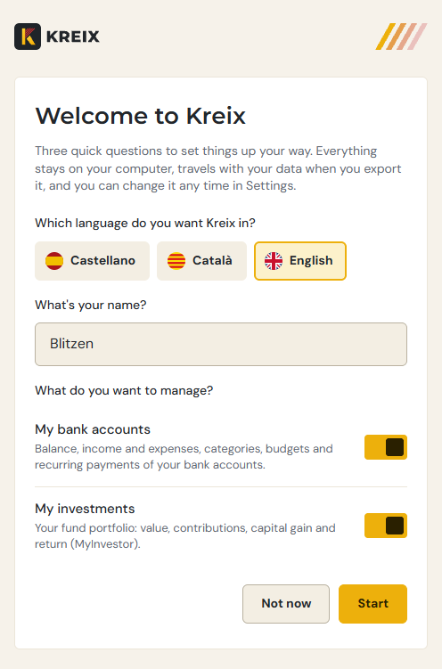
Welcome
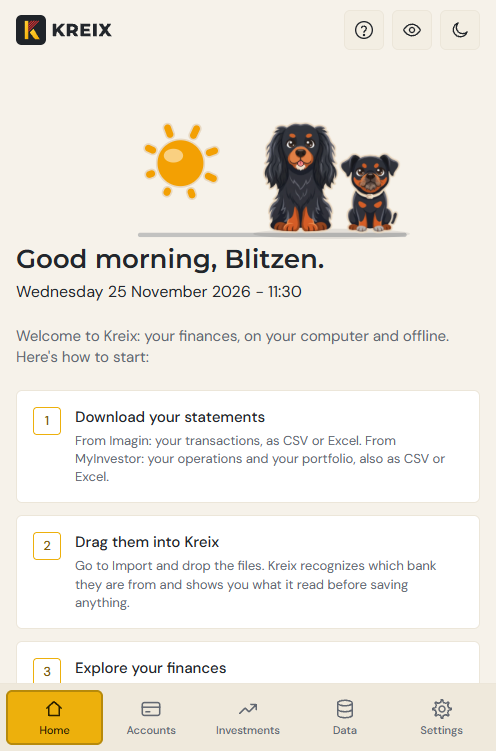
First screen
The screens
At the bottom there is a bar with five tabs: Home, Accounts, Investments, Data and Settings. At the top, three buttons: Help («?»), privacy mode (the eye) and the light or dark theme switch.
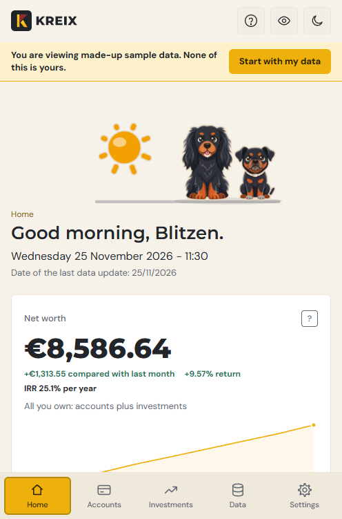
Home
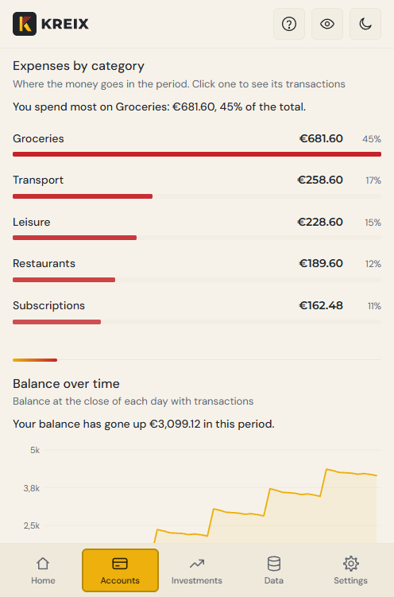
Accounts
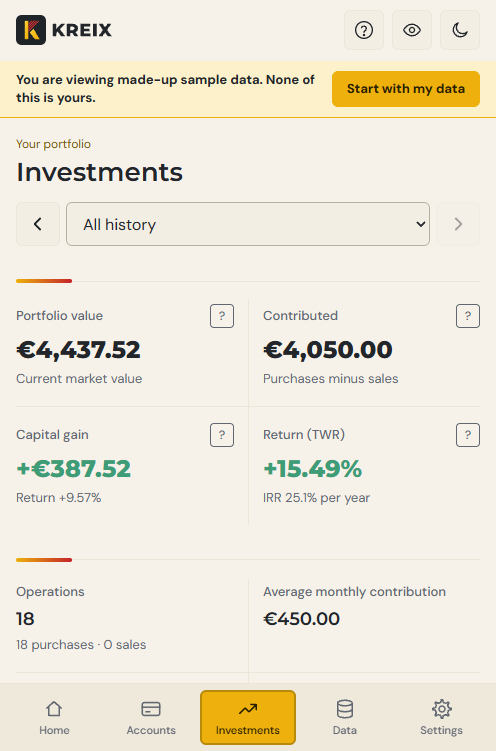
Investments
Home, Accounts and Investments show the same as the Windows program, with the cards stacked. Transactions have their menu to change the category or create rules, and you can set budgets and goals.
Help: the same glossary as on the computer.
Data: import, receive and export
In the Data tab you can Choose files (CSV or Excel statements, or a .kreix file) from the phone's Downloads or Files folders, with the same «Review before importing» preview as on the computer. Below it, Scan the QR code receives the data from the computer and Export data… saves a .kreix file (encrypted if you leave the box ticked).
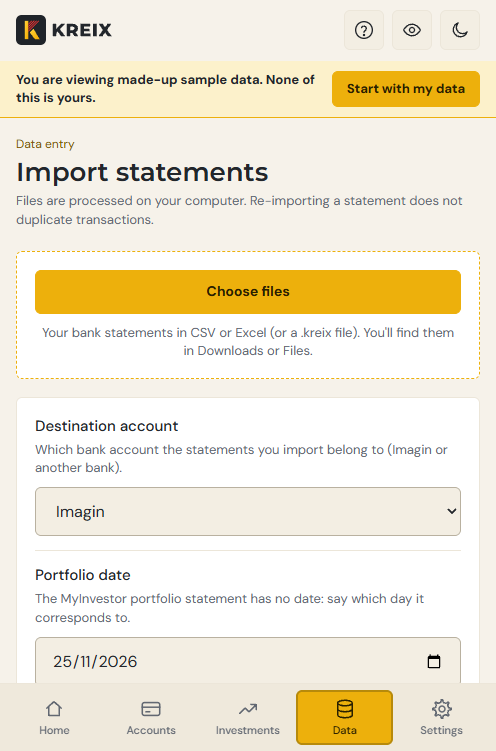
Importing statements
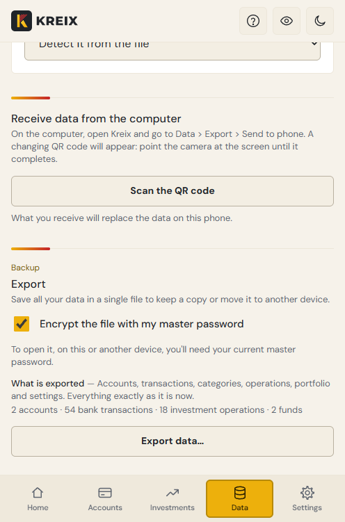
Receiving from the computer and exporting
Settings and security on the phone
Here you find the language, name, what you're interested in, text size, animated sky and the Bizum and transfers options, just like on the computer, and the category rules.
Security:Change master password… and Lock now.
Automatic lock: if you don't use Kreix for a few minutes, it hides your data and asks for the password again. You choose how long.
Lock when leaving the app: when you switch apps or turn off the screen, Kreix asks for the password again before showing your data.
Backups: on the phone they are made by hand from Data > Export: save the .kreix file in your cloud or send it to yourself. Kreix also keeps the previous version of your data, encrypted, in case something goes wrong while saving.
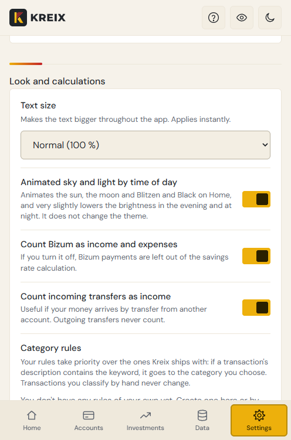
Appearance and calculations
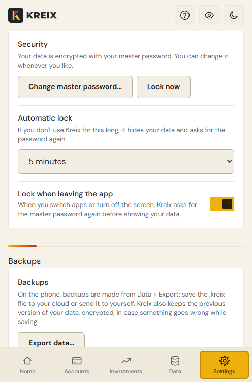
Security and backups
Differences from the Windows program
Windows program
Phone app
Designed for importing and organizing at leisure, with keyboard shortcuts.
Designed for checking your finances and for importing statements downloaded on the phone itself.
Stores the data in %APPDATA%\Kreix and makes automatic backups.
Stores the data encrypted inside the phone's browser. Backups are made by hand, by exporting a .kreix from time to time.
Generates the QR code to send the data.
Reads the QR code with the camera.
Installs with a Windows installer.
Installs from the browser, with no app store.
Be careful when clearing browser data. The app's data lives in the browser's storage. If you clear the site data or uninstall the browser, it is lost. Save an exported .kreix file from time to time, or send the data again from the computer.
On a Mac or on Linux you can use this same app from the browser, since the program with an installer is only for Windows.
10
Shortcuts and little tricks
Keyboard shortcuts (Windows program)
Ctrl + H
Hides or shows the amounts (privacy mode).
Ctrl + 1 … 7
Switch pages, in this order: Home, Accounts, Investments, Import, Export, Settings, Help.
Ctrl + K
Search everything: pages, actions, transactions and help explanations.
Ctrl + T
Switches between light and dark mode.
Ctrl + F
Goes to the transactions search box.
Ctrl + L
Locks Kreix instantly.
F5
Recalculates the page.
←→
Move through the month's budgets in Home.
Little tricks
Every «?» has its explanation. Click the «?» next to a figure to see its definition and how Kreix calculates it.
Undo only covers the last change. If you want to revert something, do it right afterwards, while the notice is still on screen.
Re-import without worrying. To add a new month, download the complete statement and drop it in: only what is new is added.
Text size. If you find reading hard, Settings > Text size makes it bigger throughout the application.
Dark or light mode. The sun and moon switch is below the side menu (on the phone, at the top right).
Try without risk. «Try with sample data» lets you explore without importing anything, and it disappears by itself when you import your data.
Up to tens of thousands of rows. Transactions are sorted, filtered and loaded in a fraction of a second, and the window remembers its size and the last page.
11
Common problems
Windows warns me when I open the installer.
That is because the installer is not signed yet. Click More info and then Run anyway.
Kreix doesn't recognize my statement.
Click Assign the columns and tell it which column is the date, the description and the amount. If the file is a PDF, download it as CSV or Excel: Kreix does not import PDFs.
The file can't be read.
Download it again, as CSV or Excel and without opening or editing it first in another application. Kreix explains the reason on the card itself.
The amounts come out with the sign reversed.
In the column wizard, say that expenses come as positive numbers (or correct the amount's sign) and check the preview before saving.
I made a mistake when importing.
Click Undo in the notice that appears right afterwards. If the notice is already gone, Settings > Delete all data leaves the database empty (the settings are kept) so you can start again.
The IRR and the TWR don't appear.
Kreix hides them when the portfolio does not match the operations (one is missing). Import the complete operations history from the beginning.
A transaction is in the wrong category.
With ••• (or right-click) choose Change category, or create a rule so it always happens.
I forgot the password.
It cannot be recovered. On the lock screen, I forgot the password deletes the encrypted file so you can start from scratch with a new one.
The QR code doesn't complete on the phone.
Bring the phone closer without moving it, turn up the brightness of the computer screen, avoid reflections and check that the browser has camera permission in the phone's settings.
The phone app won't install or the option doesn't appear.
Use Chrome (Android) or Safari (iPhone). On iPhone, if the link opened from another app, copy it and open it directly in Safari.
The data on my phone disappeared.
It is stored in the browser: if the site data is cleared, it is lost. Send it again from the computer with the QR code or import your latest .kreix.
12
Glossary
Net worth
Everything you own: the balance of your accounts plus the value of your investment portfolio.
Cash
The money available in your accounts, which you can use right away.
Savings rate
What share of what you earn in the month you don't spend: (income − expenses) ÷ income.
Net asset value
The price of one unit of a fund on a specific day.
Unit
Each «slice» of an investment fund. Your investment is worth units × net asset value.
Capital gain
The profit (or loss) on an investment: what it is worth now minus what you put in.
Return
The capital gain as a percentage of what you invested.
TWR
Return that doesn't depend on when you contribute: it chains the stretches between contributions.
IRR
Annualized return that does take into account when you contributed each amount.
ISIN
The 12-character international code that identifies a fund.
Recurring payment
A charge that repeats every month with a similar amount: subscriptions, bills.
Transfer
Moving money between two of your accounts. It is neither an expense nor income.
Category rule
«If the description contains this word, it goes to this category». Yours take precedence over Kreix's.
Master password
The password your data is encrypted with. It cannot be recovered.
.kreix file
A single file with all your data, for backups and for moving it to another device.
PWA
The phone app: a web application that installs from the browser and works without a connection.
Is something unclear?
Kreix's Help explains every figure with examples, and the website has the guide online and the frequently asked questions: dasuarezang.github.io/kreix-web
 Kreix
Kreix